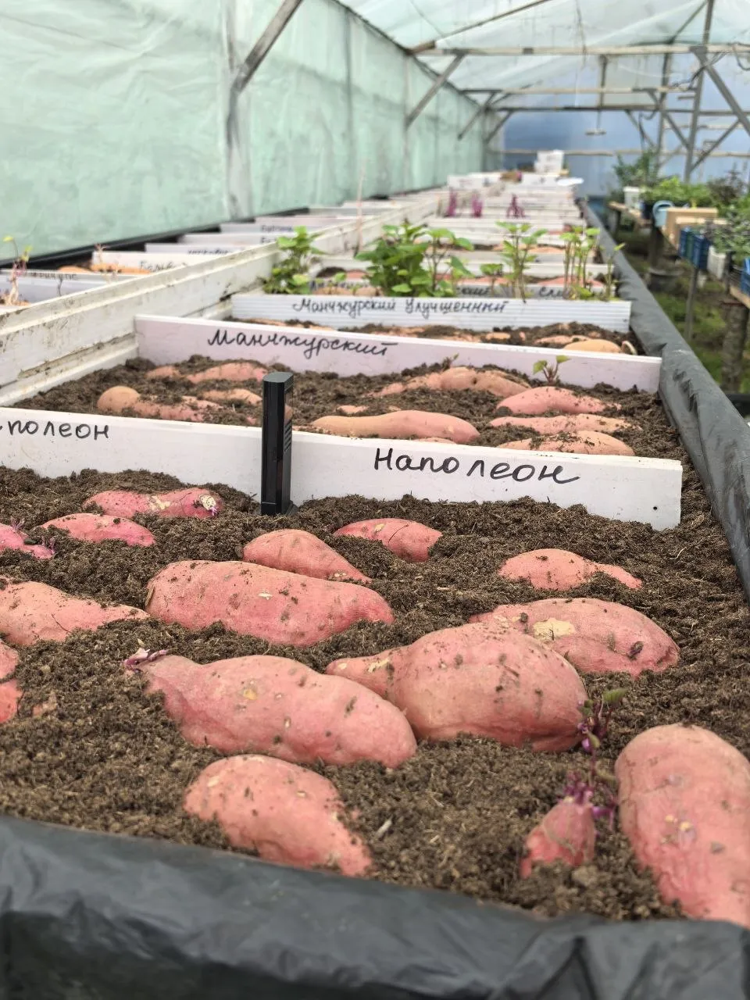
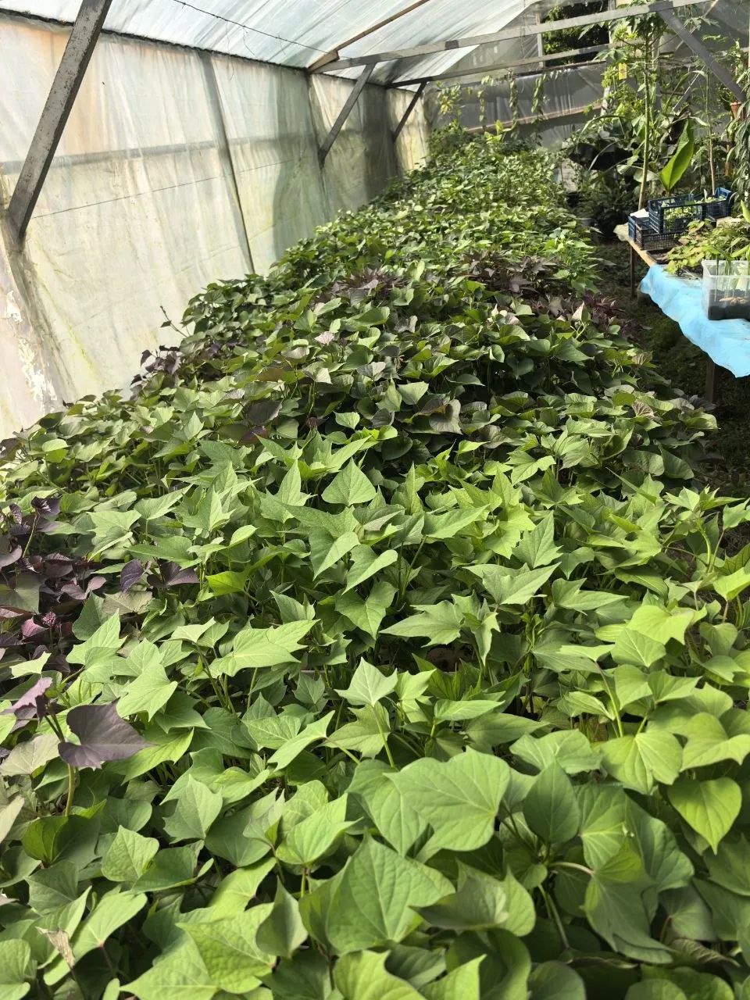
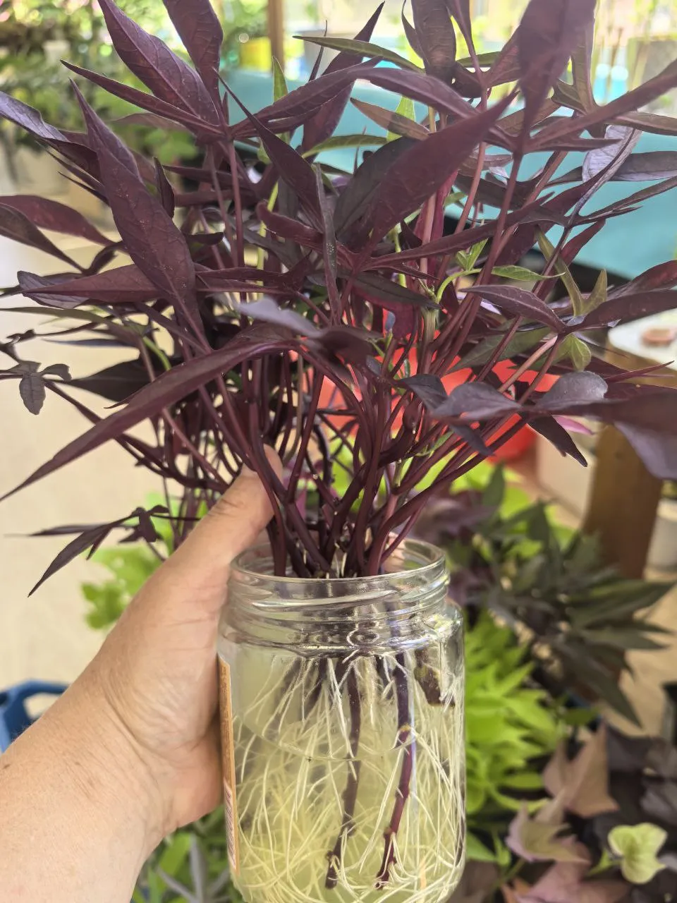
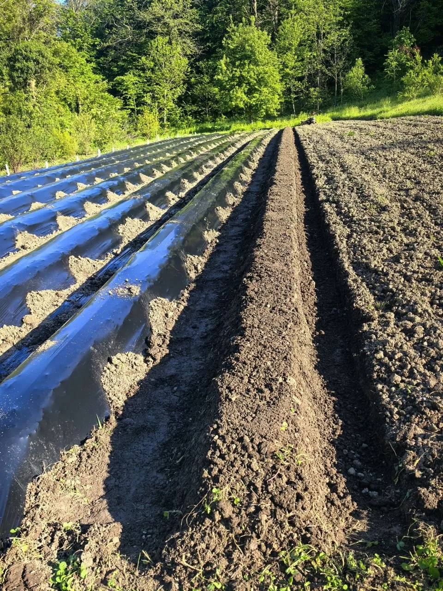
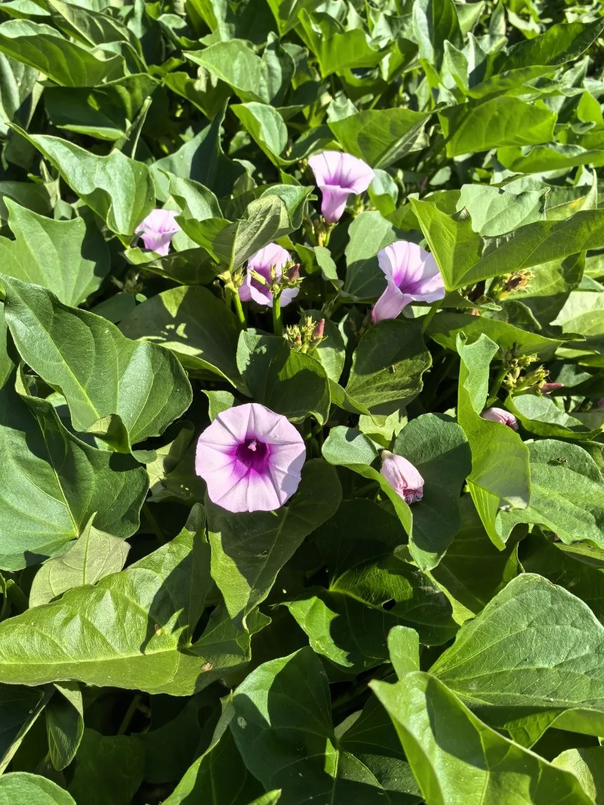
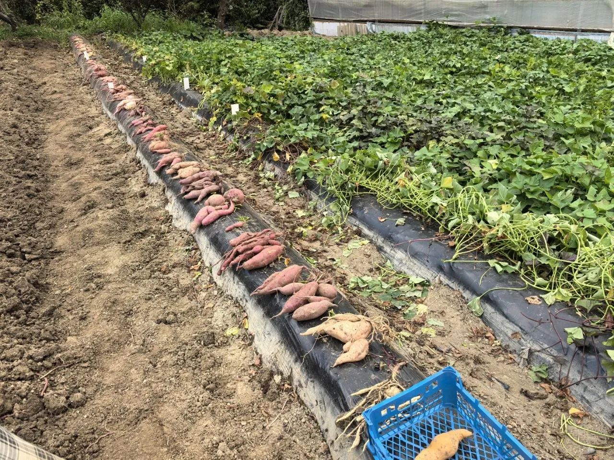
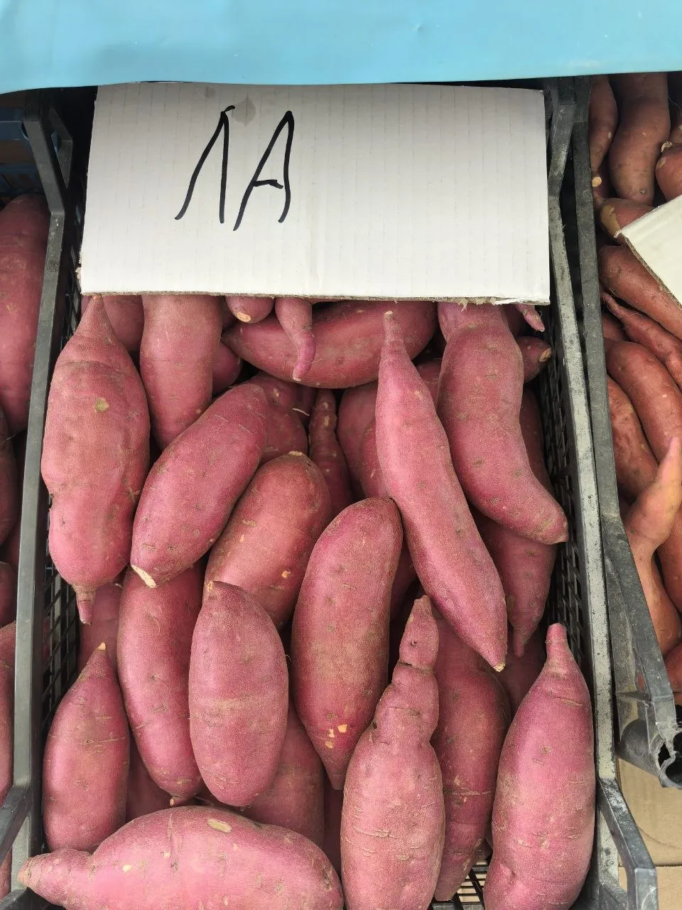
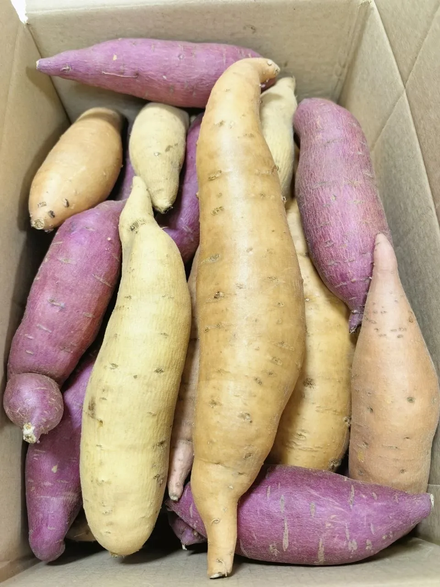
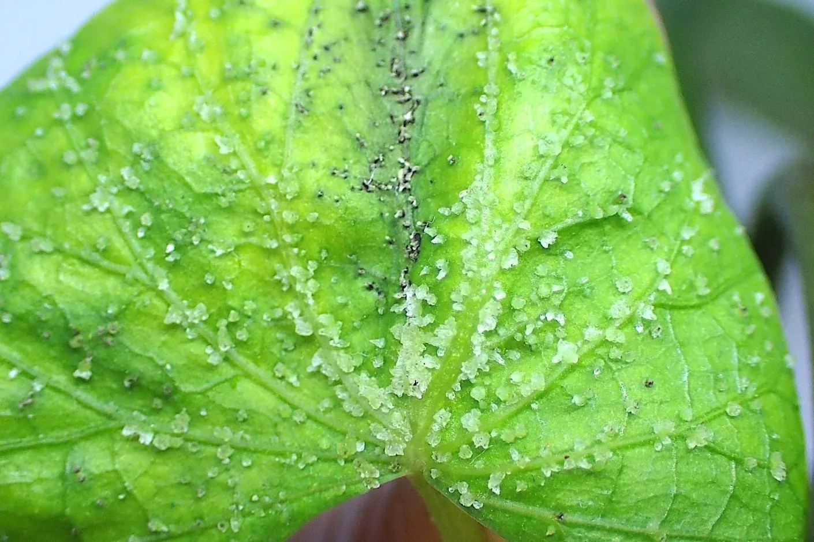

1. Особенности культуры
Батат имеет длительный период вегетации — от 90 до 180 дней. Он крайне чувствителен к холоду: при температуре ниже +14°C рост замедляется, при +10°C почти прекращается, а клубни начинают «мёрзнуть» уже при +10°C и повреждаются при +5°C.
Батат отзывчив к теплу, рыхлой почве, мульчированию и регулярным поливам. В отличие от картофеля, батат размножают в основном ростками (черенками), полученными из клубней.
В России батат выращивают рассадным способом, так как вегетационный период превышает те же показатели у картофеля.
2. Подготовка посадочного материала
Для получения посадочного материала используют клубни. В середине февраля или начале марта клубни помещают в ящики с песком, торфом или рыхлой почвой. Клубень заглубляют на две трети и слегка увлажняют. Почва может быть любой: питание черенкам не требуется, они питаются запасами клубня.
Главное условие — высокая температура: не ниже +30°C. При такой температуре первые ростки появляются через 10–15 дней.
Когда ростки достигнут длины 15–20 см, их аккуратно отделяют от клубня или срезают ножом. Если плети отросли слишком длинными, их можно разрезать на несколько частей.


Когда начинать проращивание?
Если вам не нужно много ростков и вы не хотите возиться всю зиму, то батат выкладывают на проращивание в период с конца февраля до конца марта. Можно и в апреле.
Чем позже выкладываете и вам надо много ростков, тем больше клубней вам надо заложить. Если вы начинающий, то не надо сразу много, достаточно 1–5 клубней. Посмотрите, поэкспериментируете и научитесь. Это очень интересно и увлекательно!
3. Укоренение черенков
Черенки ставят в воду или сразу высаживают в стаканчики с почвой. Батат — живучая культура, корни появляются уже через 2–3 дня. Черенки прекрасно приживаются без каких-либо стимуляторов. С одного клубня можно получить 20–50 растений.

Перед высадкой в грунт рассаду необходимо закалить — постепенно приучить к прямому солнцу, чтобы листья не получили ожоги.
4. Посадка батата в открытый грунт
Батат высаживают, когда земля прогреется и ночные температуры превысят +14°C. Хороший ориентир — сроки высадки томатов: когда можно высаживать томаты, можно и батат.
Батат сажают рядами: 35–50 см между растениями и минимум 1 метр между рядами. Такие широкие междурядья нужны для длинных плетей, которыми батат стелется, как тыква. Окучивать батат нельзя.

Главное условие успеха — высокая тёплая грядка. На юге грядки накрывают чёрной плёнкой, на севере — прозрачной, которая лучше прогревает почву.
Можно также использовать толстый слой мульчи из травы. В холодных регионах весной и осенью над растениями устанавливают временные укрытия или мини-теплицы.
Вопрос о поднятии плетей остаётся спорным, но чаще всего поднимать их не требуется: батат может использовать дополнительные точки укоренения для повышения влагообеспечения.
5. Уход за растениями
Батат не требует сложной обработки. Основной уход заключается в регулярном поливе, борьбе с сорняками и наблюдении за состоянием растений.
Батат хорошо переносит засуху, но для получения крупного урожая ему необходим обильный полив раз в 7–10 дней. При недостатке влаги растение расходует запасы клубня, ухудшая урожай. Батат не любит переувлажнения и застой воды. За 10 дней до выкапывания полив прекращают.
Из вредителей батат наиболее часто повреждают слизни, проволочник, медведка, а также мыши и крысы — последние наносят наибольший ущерб, поедая клубни прямо под землёй. Следует позаботиться об их отсутствии.
Многие сорта батата цветут. Цветки — сиренево-белые, напоминают маленькие граммофоны. Цветение не связано с урожаем, но украшает растение.

6. Когда копать батат
Батат — культура с длительным периодом роста, поэтому сроки уборки варьируются по регионам. Убирать батат начинают не по биологической зрелости, а по наступлению холодов — оставлять клубни в холодной земле опасно.
Осенью клубни активно набирают массу, поэтому не стоит спешить с уборкой, если ожидается тёплая погода. Но когда дневная температура опускается до +10°C, рост прекращается и дальнейшее ожидание бессмысленно.

Если ожидаются заморозки, батат нужно выкопать — ботва погибает даже от лёгкого мороза, лишая клубни защиты. После гибели ботвы клубни нельзя оставлять в земле более двух дней.
Подмёрзшие или даже просто переохлаждённые клубни плохо хранятся.
После выкопки обязательно пройдите следующие шаги: → кюринг, затем → хранение.
7. Кюринг — подготовка клубней к хранению
Перед хранением батат должен пройти кюринг — «лечение». Это процесс подвяливания клубней в тёплых и влажных условиях: температура +30…+34°C, влажность 80–95%, длительность 3–7 дней.
В это время:
- Заживают механические повреждения
- Кожура утолщается
- Включаются защитные механизмы
- Начинается процесс накопления сахаров, клубень становится сладким

Кюринг можно проводить в комнате, коробке с влажным полотенцем возле батареи или любым доступным способом.
После кюринга переходите к → хранению.
8. Хранение батата
После кюринга батат хранят при температуре +12…+18°C и влажности 50–80%. В таких условиях клубни могут храниться до двух лет. При более высоких температурах они прорастают. При +10°C батат теряет вкус, при +5°C погибает.

Батат нельзя хранить в холодильнике — холод повреждает клетки клубня, он становится «мертвым», даже если внешне выглядит нормально. Нельзя хранить батат в герметичных пакетах: клубни дышат, и скопление углекислого газа их убивает.
Подходят бумажные пакеты и картонные коробки. Оптимальные условия: бумажная коробка под кроватью.
9. Выбор сорта: что нужно знать
Почему невозможно определить сорт по клубню
В мире существует более 7000 сортов батата. Внешний вид клубня не позволяет точно опознать сорт. В магазинах продают в основном оранжевомякотные сорта, но они часто не подходят для северных регионов из-за длинного срока вегетации.
Узнать сорт можно только по описанию от оригинального производителя или сравнив листья и лозу с описаниями сортов.
Миф о холодостойких сортах
Информация о «холодостойких сортах» — миф. Батат — тропическое растение, родиной его является Южная Америка — Перу и Колумбия. Экватор! О какой холодостойкости может идти речь?
Батат не растёт ниже +14°C. А если температура опустится до +10°C, то обмен веществ у батата приостанавливается. Поэтому определение «холодостойкий батат» не имеет права быть.
На сегодняшний день нет холодостойких сортов. Есть ранние сорта батата и более поздние. Для северных регионов подходят ранние сорта (80–100 дней), и им нужно создавать тёплые условия выращивания.
Готовые адаптированные для России сорта — в нашем каталоге.
10. Вкусовые особенности сортов
Вкус батата зависит от сорта, условий выращивания и почвы. Сладкие сорта чаще поздние и не всегда подходят для северных регионов. Универсального «картофельного вкуса» у батата нет — это отдельная культура, не похожая ни на картофель, ни на другие овощи.
Из батата можно готовить как блюда, так и десерты.
11. Полезные свойства батата
Батат богат клетчаткой, витаминами и минералами. Подходит диабетикам, так как помогает регулировать уровень сахара. Крахмал батата имеет другую структуру, чем картофельный, и медленнее усваивается. Батат полезен для ЖКТ, обладает обволакивающим эффектом, а некоторые сорта можно есть сырыми.
Для диабетиков важно есть батат в запечённом или варёном виде и тщательно пережёвывать — пюре повышает сахар быстрее.
12. Оэдема на листьях батата
Это оэдема (или эдема), в народе её называют водянкой. Это не болезнь и не вредители, а реакция растения на избыток влаги. Оэдема появляется, когда батат получает слишком много воды и не успевает её испарять, особенно при недостатке света, плохой вентиляции или если растение стоит на холодном подоконнике.
В результате в тканях скапливается жидкость, и на листьях образуются пупырчатые, бородавчатые наросты. Оэдема не опасна для растения, если перелив не носит постоянный характер. Поражённые листья уже не восстановятся, но новые будут расти здоровыми после нормализации условий.

Что нужно сделать:
- Сократить полив
- Дать почве хорошо просохнуть
- Обеспечить дренаж
- Добавить света и воздуха
- Не держать растение в холоде
13. Часто задаваемые вопросы
Батат убирают до первых заморозков, когда дневная температура опускается до +10°C. Ботва погибает даже от лёгкого мороза. → подробнее в разделе 6
Сначала — обязательный кюринг (3–7 дней при +30…+34°C), затем хранение при +12…+18°C и влажности 50–80% в бумажной коробке. Нельзя хранить в холодильнике. → подробнее в разделе 8
Миф. Батат — тропическое растение, не растёт ниже +14°C. Для северных регионов выбирайте ранние сорта (80–100 дней). → подробнее в разделе 9
С конца февраля до конца марта. Для начинающих достаточно 1–5 клубней. → подробнее в разделе 2
Это оэдема (водянка) — не болезнь, а реакция на избыток влаги. → подробнее в разделе 12
Да, через рассаду. Выбирайте ранние сорта, используйте укрытие и мульчу. → подробнее в разделе 9
Заключение
Батат — перспективная, вкусная и полезная культура. Он благодарно отзывается на тепло, мульчу и поливы, а при правильной технологии даёт отличный урожай даже в условиях короткого лета. Выращивание батата — увлекательный процесс, который приносит не только урожай, но и удовольствие от наблюдения за необычным и красивым растением.
Почему наш батат лучший?
Экологически чистый
Выращен на высоте 200 м над уровнем моря, без химических удобрений
Родниковая вода
Наш батат питается чистым горным воздухом и родниковой водой
Выращен с любовью
Окружен безграничной заботой, легко прорастает и даёт дружные ростки
Более 150 сортов
Сбор сортов со всего мира, 10 лет опыта